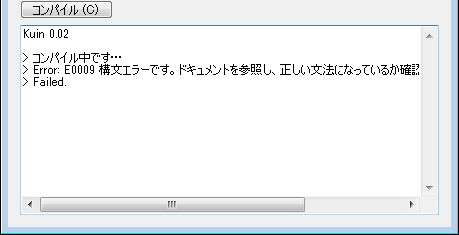
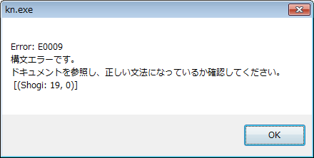

kn.exe (Kuin.exeのCUI操作用ツール)
Last Modified: 2013/04/30 19:50:27.
Only available in Japanese text.
概要
kn.exeは、コマンドプロンプトからKuin.exeの[コンパイル]ボタンのクリックを発生させるツールです。
※Kuin.exeはくいなちゃん(@kuina_tesso)が作成した、Kuinの処理系です。
ダウンロード
【自己責任でご利用下さい】
初公開 2012/09/01 v0.01
最終更新 2013/04/30 v0.04 (かなり良い感じになりました)
より詳しい更新履歴はGitHubに置いてあるReadme.txtをご覧ください。
GitHub tatt61880 / autohotkey_kn
※Kuin 0.023でしか動作しません。
使用方法
- kn.exeをKuin.exeと同じフォルダにおいてください。
- コマンドプロンプトから下記のように実行します。
kn.exe [sourcefile.kn [run]]
sourcefile.knは、kn.exeの置いてあるフォルダからの相対パスで入力してください。-
例1: kn.exe
Kuin.exeのソースファイル欄が空欄だろうがなんだろうが、とにかくコンパイル。 -
例2: kn.exe dir\test.kn
dirフォルダのtest.knをコンパイル。 -
例3: kn.exe dir\test.kn run
dirフォルダのtest.knのコンパイル。
→コンパイルに成功した場合: test_dbg.exeを実行する。
※この時の作業フォルダはdirフォルダです。
-
例1: kn.exe
セールスポイント
| 公式のKuin.exe | kn.exe (このツール) |
|---|---|
| スクロールしないと、エラーの行番号がわからない。 | スクロールしなくてもエラーメッセージを最後まで読めて便利！ (エラーの場合のみ下図のようなメッセージボックスが表示されます)  |
便利な使い方
公式の「Kuin.exe」と「Stdフォルダ」、そして「kn.exe」をまとめてパスの通ったディレクトリに置いておくと、
Kuin.exeの置いていないディレクトリからでもコンパイル出来て便利です。
※StdフォルダとKuin.exeはGitHubには置いていません。公式のものを使用してください。
不具合を発見された場合
@tatt61880にご連絡頂けると幸いです。
interviews経由で匿名で指摘頂いても構いません。
不具合でなくても、改善案があれば、是非教えてください。
その他
- このツールの作成にあたり、AutoHotkeyを流行らせるページの情報にお世話になりました。
宣伝
Kuin関連ページの紹介
Copyright (C) Tatt(タット) ---- Twitterアカウント @tatt61880